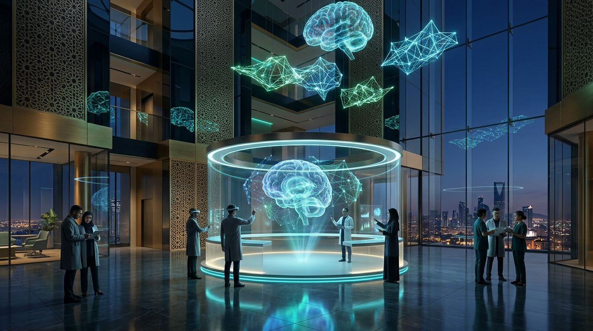
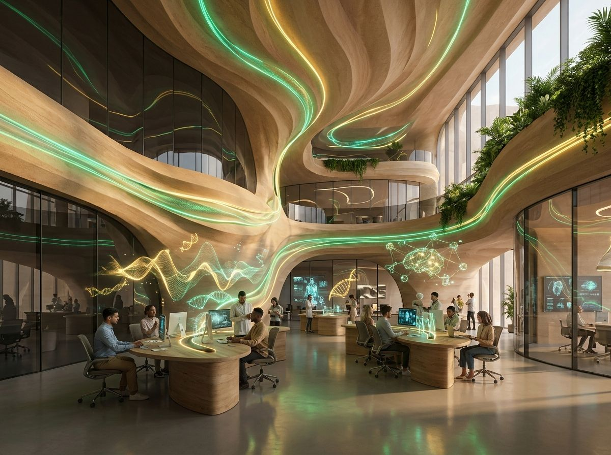

التحدي المميز
مسابقات بمواعيد محددة في FHIR R4 وNPHIES، ومعالجة اللغة العربية السريرية، وإتاحة الوصول، وسير عمل CI الآمنة. بيانات اصطناعية فقط، ولوحات صدارة مفتوحة، وتقدير للفرق المتميزة، ضمن بيئة احتضان برينسايت وتعاون أكاديمي مقترح مع جامعة الأميرة نورة.

اختر تحدياً، ابنِ حلّك على بيانات اصطناعية، وتابع ترتيبك في لوحة الصدارة.
تنويه: التحديات والمواعيد والتقديرات في هذه الصفحة عيّنات مقترحة.
كل تحدٍّ له نافذة تسجيل وتقديم وإعلان نتائج.
| # | الفريق | النتيجة | النوع |
|---|
تتدرّج الرتب بالأوسمة.

حاضنة الابتكار المشتركة (مقترحة)
جامعة الأميرة نورة بنت عبدالرحمن × BrainSAIT
يسعى مختبر B.I.Lab إلى ربط منظومة وكلاء برينسايت الذكية بالبنية التحتية البحثية والسريرية الرائدة في جامعة الأميرة نورة بنت عبدالرحمن؛ لتحويل الأفكار البحثية والسريرية إلى تطبيقات طبية جاهزة للإطلاق.
تنويه: هذا التعاون مقترح ولم يُبرم بعد اتفاق رسمي مع جامعة الأميرة نورة؛ ويُذكر اسم الجامعة ومرافقها للتعريف فقط.
مسارح المحاكاة السريرية ومختبر التدريب الجراحي بالواقع الافتراضي وتدريب الإجراءات الطبية.
مركز أبحاث العلوم الطبيعية والصحية بجوار مستشفى الملك عبدالله الجامعي (KAAUH).
مختبر الروبوتات والذكاء الاصطناعي، ومختبر تحليل البيانات، ومختبر الأمن السيبراني.
بيئة سريرية غامرة صُممت للأطباء والممارسين الصحيين لتجربة التشريح ثلاثي الأبعاد، محاكاة الإجراءات الجراحية، والتفاعل الصوتي المباشر مع المساعد السريري العربي داخل فضاء visionOS.
بنية معيارية منفصلة الأدوار لتطبيق الطبيب (:app-clinician) وتطبيق المريض/BPR (:app-patient) فوق طبقة FHIR R4 تعمل دون اتصال ومساعد ذكي عربي أصيل.
نماذج HL7 FHIR R4 ثنائية اللغة، أدوات NPHIES، التحقق وإخفاء الهوية/الإقامة، وتدفقات BPR (البحث، التسجيل، إصدار الاعتماد) مع مستودع OfflineFirstFhirRepository.
مساعد الطبيب (ClinicalAssistant) ومساعد المريض (PatientAssistant) مع إطار السلامة السريرية SafetyFraming وتحويل الصوت العربي السعودي (ar-SA).
تطبيقان مستقلان بواجهة RTL عربية كاملة، وتكامل Health Connect، وربط مباشر مع معرّف BPR الرسمي (OID 1.3.6.1.4.1.61026).
اختبر خطوات البحث والتسجيل وإصدار اعتماد السجل الصحي الشخصي مع إخفاء الهوية التلقائي
اسأل بالعربية أو الإنجليزية عن احتضان المشاريع، التعاون المقترح مع جامعة الأميرة نورة، تطبيقات Apple Vision Pro، أو ربط BPR مع FHIR R4.
يجمع مستودع B.I.Lab مشاريع BrainSAIT العامة كـ submodules: كل مشروع يبقى في مستودعه، والمختبر يثبّت إصداراً محدداً منه. هذه الأوامر تكفي للبدء.
ينزّل المستودع ومشاريعه الفرعية في خطوة واحدة.
git clone --recurse-submodules https://github.com/Fadil369/B.I.Lab.gitيجلب المشاريع الفرعية لنسخة موجودة.
git submodule update --init --recursiveينقل المؤشر إلى أحدث commit ثم يثبّته في المختبر.
git submodule update --remote projects/agent-visibility
git add projects/agent-visibility
git commit -m "chore: bump agent-visibility"يعرض الـ commit المثبّت لكل مشروع.
git submodule statusAppBridge هو الجسر في جهة المضيف: يتوسط بين تطبيق المحادثة وواجهة تطبيق MCP داخل iframe، وينقل أدوات الخادم وموارده ومطالباته إلى الواجهة، ويتولى مصافحة التهيئة.
يتطلب Node.js 20 أو أحدث.
npm install @modelcontextprotocol/ext-apps \
@modelcontextprotocol/client@^2.0.0 zod@^4.2.0مبسّط من مثال التوثيق الرسمي.
import { AppBridge } from "@modelcontextprotocol/ext-apps/app-bridge";
// client: your connected MCP client, transport: PostMessageTransport to the iframe
const bridge = new AppBridge(
client,
{ name: "BrainSAIT Host", version: "1.0.0" },
{ openLinks: {}, serverTools: {}, logging: {} },
);
bridge.oninitialized = () => {
bridge.sendToolInput({ arguments: { city: "Riyadh" } });
};
await bridge.connect(transport);المرجعان باللغة الإنجليزية: كتاب Pro Git المجاني، وتوثيق واجهة MCP Apps لدمج التطبيقات التفاعلية.